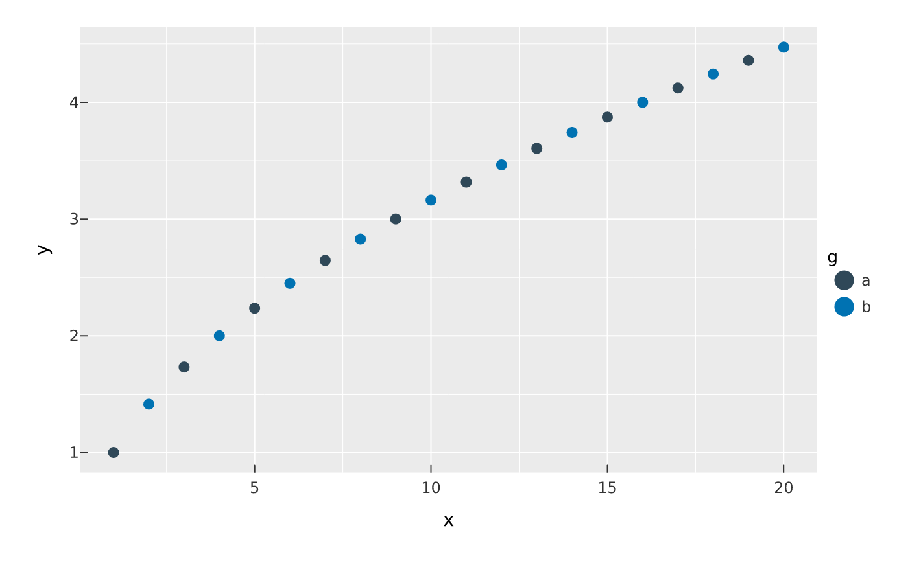
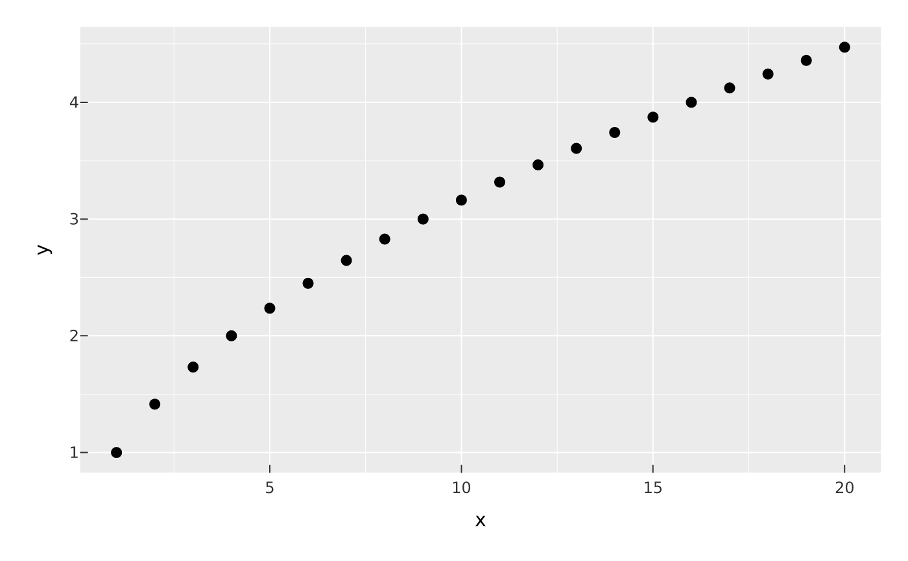
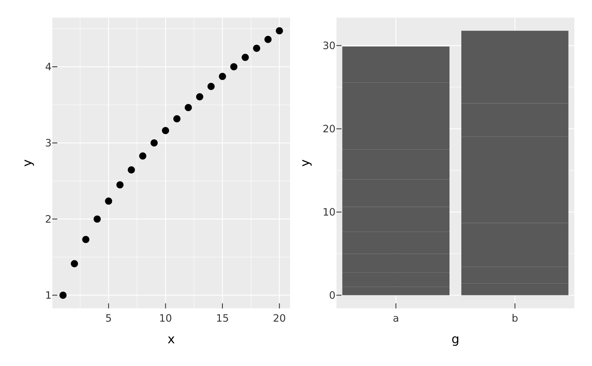
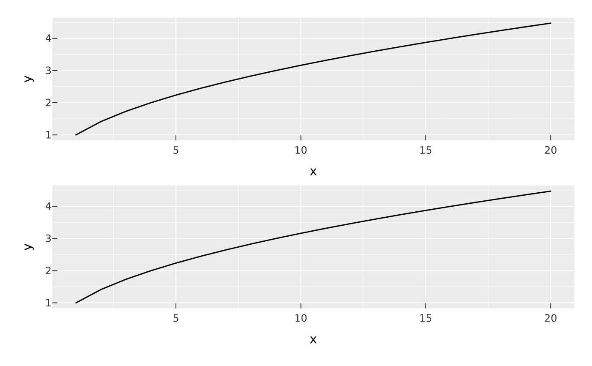
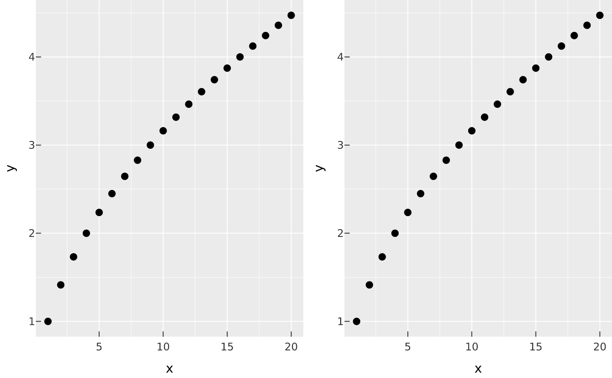

An interval selection is filled by dragging a brush over the plot. The
brushed pixel range is converted to a data-value range on each of the
encodings (through the panel's scale), and every element whose data values
fall inside that range is a member. condition() and filter_by() react to it
exactly as they do to a select_point() selection: highlight/dim members, or
show only them. Clearing the brush (a click on empty space, or Escape)
empties the selection.
Arguments
- plot
A PlotSpec (piped form), or a selection name string (free-standing form).
- name
The selection name (piped form), referenced by
condition()andfilter_by().- encodings
The position channels the brush constrains:
c("x", "y")(default, a rectangle),"x"or"y".- region
"rect"(default, a brush rectangle) or"lasso"(a freehand polygon; membership by element position inside the polygon).- empty
Whether an empty selection contains all elements (
TRUE, default, so an untouched plot shows its full self and brushing narrows it) or none (FALSE).- on
Deprecated alias for
encodings:"x","y"or"xy".- bind
NULL(default) for a brush, or"scales"to bind the selection to the view's own pan/zoom domain (Vega-Lite'sbind: "scales"; see the section below). A"scales"selection must useregion = "rect".
Value
A PlotSpec (piped form) or a SelectionSpec (free-standing form).
Details
Membership is by data value, so it follows the scale rather than the drawn shapes:
continuous (including
log10,sqrtandreverseaxes): the element's value lies in the brushed data range;date / datetime: the same test on the date's numeric value;
discrete: the element's category is one whose band centre the brush covers.
With encodings = c("x", "y") (the default) the brush is a rectangle and both
values are tested; with "x" it spans the panel's full height and only the x
value is tested; "y" is the transpose. In a faceted plot the data range applies to every
panel, so brushing one facet selects matching rows in all of them.
The selection lives in the plot spec, so it is inert on a static render
and is enacted by a capable host (vellumwidget::as_widget()) without Shiny.
Under Shiny the members are reported in input$<id>_selected and the brushed
data range in input$<id>_brush.
Like select_point(), it is pipe-first (attach to the plot and return it) or
free-standing (call with the name as the first argument, then share it across
views with add_selection() / filter_by()).
Driving another view's zoom (overview + detail)
An interval selection can set the visible range of another view: give the
detail view a bind_scale() that names the selection, and brushing the
overview zooms the detail to the brushed range (clearing the brush resets
it). This is Vega-Lite's scale = list(domain = list(param = "brush")).
bind = "scales" is Vega-Lite's other half: the selection is bound to the
scales of the view it is registered on. No brush is drawn; panning and
zooming that view (wheel, pinch, drag in pan mode, the navigator) is the
selection, its interval the visible data range on encodings, and resetting
the zoom empties it. Pair it with bind_scale() on another view for linked
zoom, or with condition() / filter_by() to react to the visible window.
Examples
df <- data.frame(x = 1:20, y = sqrt(1:20), g = rep(c("a", "b"), 10))
# brush an x range: points outside it fade to grey
vplot(df) |>
mark_point(x = x, y = y, color = condition("brush", g, "grey80")) |>
select_interval("brush", encodings = "x")

# brush a rectangle and show only the rows inside it
vplot(df) |>
mark_point(x = x, y = y) |>
select_interval("box", encodings = c("x", "y")) |>
filter_by("box")

# free-standing: brush one view, filter another
sel <- select_interval("brush", encodings = "x")
hconcat(
vplot(df) |> mark_point(x = x, y = y) |> add_selection(sel),
vplot(df) |> mark_bar(x = g, y = y) |> filter_by(sel)
)

# overview + detail: brushing the overview zooms the detail
brush <- select_interval("brush", encodings = "x")
vconcat(
vplot(df) |> mark_line(x = x, y = y) |> add_selection(brush),
vplot(df) |> mark_line(x = x, y = y) |> bind_scale(brush)
)

# linked zoom: zooming the left view zooms the right one along x
zoom <- select_interval("zoom", encodings = "x", bind = "scales")
hconcat(
vplot(df) |> mark_point(x = x, y = y) |> add_selection(zoom),
vplot(df) |> mark_point(x = x, y = y) |> bind_scale(zoom)
)
